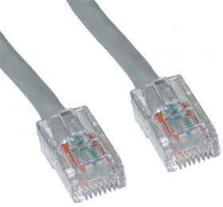

| UTP | ||||
|---|---|---|---|---|
| IMAGEN | DESCRIPCIÓN | PRECIO | ||
| s | Sigifica Unshielded Twisted Pair (lo que se traduce commo "Par trenzado")Los cables utp se utilizan para conectar una red de computadoras de la manera más rápida, formando así una red e área local la mayoría de los técnicos recurren a este cable para configurar una LAN, ya que son más baratos del mercado y no provocan apenas interferencias |
|
||
| VOLVER | ||||